|
|
| sea stars text index | photo index |
| Phylum Echinodermata > Class Stelleroida > Subclass Asteroidea |
| Cushion
star Culcita novaeguineae Family Oreasteridae updated Jul 2020 Where seen? This almost globular sea star is sometimes seen on the larger reefs on our Southern shores. Usually among live hard corals. Out of water, it may 'deflate' and appear more star-shaped. It is more often encountered by divers in deeper waters, but are sometimes also found on reef flats. Usually seen alone or widely spaced apart. According to Gosliner, this is considered the most widespread and common species of cushion star. Features: Diameter with arms 12-20cm. Arms very short, body almost globular. According to Lane, the thick calcified body walls and rounded shape makes it more difficult for fish and other predators to bite it. The upperside has a texture of circular shapes and little bumps. When submerged tiny transparent finger-like structures (papulae) might be seen on the upperside. The underside is flat with five grooves and short tube feet with sucker-shaped tips. They come in a wide range of colours and patterns. Juveniles are flatter, more star-shaped with short arms edged with large marginal plates. These are usually well hidden among and under rocks and stones and often overlooked. It appears that if they are overturned, they can right themselves by inflating the body so the upperside is very round. The action of waves then turns the sea star the right side up. See the video of this below by Yuejie Zheng. Young cushion stars are sometimes mistaken for other large sea stars. Here's more on how to tell apart large sea stars seen on our shores. |
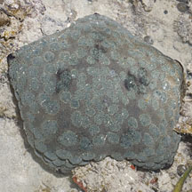 Terumbu Bemban, Jul 11 |
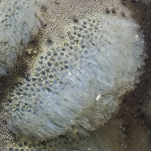 Tube feet on upper surface |
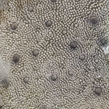 Upper surface. |
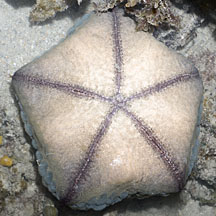 Underside |
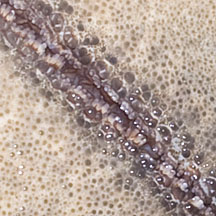 Underside. |
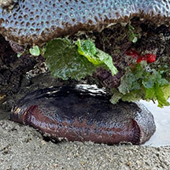 Adult seen hidden under live coral Beting Bemban Besar, Oct 25 Photo shared by Tammy Lim on facebook. |
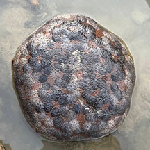 Adult when removed from hiding. |
| What
does it eat? It is reported that they eat live corals similar
to the feeding habits of the dreaded Crown-of-thorns sea star (Acanthaster
planci). According to Chow, it has been found to eat some species
of hard corals. But according to Lane, those in Singapore evert their
stomachs over immobile animals or even on sediments to eat the organic
particles found there. According to Gosliner, Culcita species
gains at least part of their nutrition from eating coral polyps as
well as seaweeds. While Schoppe says they eat coral polyps and other
immobile invertebrates. According to Marsh and Fromont, it eats corals such as Acropora, Pocillopora and Porites. It also eats echinoids (sand dollars, sea urchin, heart urchins) as well as biofilm growing on the sea bottom. Cushion friends: According to Schoppe and to Gosliner, the commensal shrimp Periclimenes soror is often seen on the underside as well as upperside of the sea star. According to Marsh and Fromont, pearlfish (Carapidae) have been seen sheltering inside the sea star. But this has not been observed for those stars seen at low tide on the intertidal. Cushion babies: According to Marsh and Fromont, the sexes are separate and up 7 million small eggs can be spawned in one event. When fertilised, they develop into planktonic larvae that swim near the surface for about 18 days before settling to the bottom to metamorphose into a juvenile sea star. It can take 2 years from metamorphosis to the adult 'cushion' form. |
| Cushion stars on Singapore shores |
On wildsingapore
flickr
|
| Other sightings on Singapore shores |
| How an upside down cushion star rights itself! |
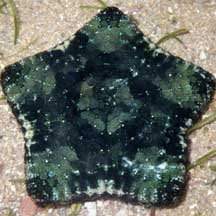 Juvenile cushion star 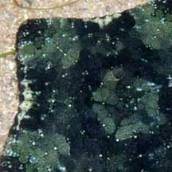 Cyrene Reef, Mar 09 Shared by Loh Kok Sheng on his blog. |
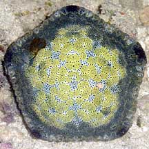 Juvenile cushion star 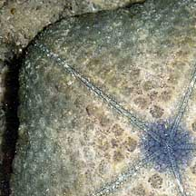 Pulau Senang, Jun 10 Shared by Loh Kok Sheng on his flickr. |
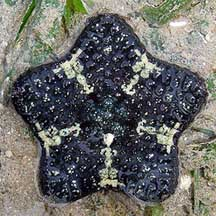 Juvenile cushion star 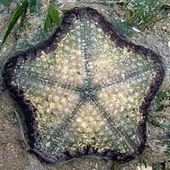 Cyrene Reef, Jun 08 Photo shared by Chim Chee Kong on his flickr. |
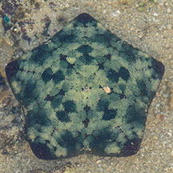 Juvenile cushion star 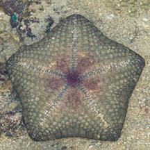 Cyrene, Jul 25 Photo shared by Jonathan Tan on facebook. |
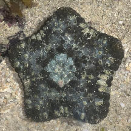 Juvenile cushion star 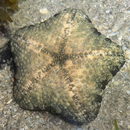 Cyrene, Jul 25 Photo shared by Kelvin Yong on facebook. |
|
Links
References
|